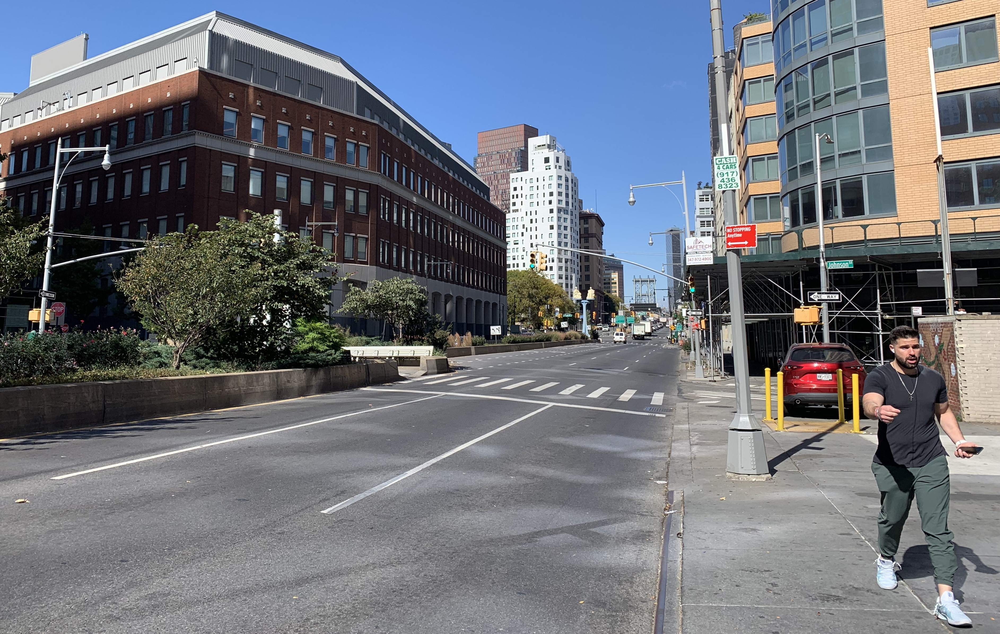

Greener Corridors examines New York City’s largest arterial thoroughfares as opportunities to create more livable, efficient, and green public spaces. These corridors are sometimes referred to as “stroads” in urban planning circles because they contain features commonly associated with streets (such as places where people live and shop) as well as roads (such as high-speed traffic lanes designed to quickly move large volumes of through-traffic. This street-road mix is often incompatible, and stroads are frequently criticized for being inefficient, unappealing, dangerously designed, and too focused on through-movement at the expense of walkable environments that foster a sense of place. This page provides a policy map highlighting how far New York City has come in transforming arterials, where it has stalled, and how much more remains to be done.
An Inventory of Efforts to Improve NYC's Largest Streets
The eastern portion of Atlantic Avenue is undergoing construction as part of DOT’s Great Streets program. Photo: Kade Van Meeteren.
New York City is fortunate to have a growing number of government officials, nonprofit organizations, and community advocates who are rethinking arterials in the face of climate change, shifting mobility preferences, and ever-evolving local needs. While programs and ideas for improving arterials run the gamut from street design best practices to freight efficiency, New York City lacks a truly comprehensive approach to implementing arterial redesigns that is scaled for citywide impact.
Understanding the full planning and policy landscape is a critical first step. The following interactive diagram and its accompanying map, which can be toggled via the tabs below, inventory relevant efforts from the past several years by New York City and State government and nonprofit and community groups. The visualizations are followed by a brief narrative that provides more context for a few key efforts.
Mapping Recent Place-Based Policies
Each shape represents one of the more geographically focused plans or pilot projects that are featured in the Policy Diagram. Also shown are environmental justice areas and our study corridors, which are shaded according to whether they are 1) Vision Zero Priority Corridors, 2) within areas that tend to be hotter than the citywide average surface temperature, and/or 3) within an area that would experience flooding in an extreme scenario. Darker lines reflect corridors that are more than one of these categories. To explore the map, hover over the shapes with your cursor.
Beginning in the early 2000s under Mayor Michael Bloomberg and his Transportation Commissioner, Janette Sadik-Khan, New York City made a significant push to broaden the function and safety of its traffic arterials through measures such as dedicated bus and bike lanes, lower speed limits, intersection redesigns, and more street trees and green infrastructure. This has largely continued under subsequent administrations.
Currently, the Department of Transportation (DOT) is redesigning four arterials—Atlantic Avenue, Fourth Avenue, Grand Concourse, and Queens Boulevard—with major safety and aesthetic improvements under Great Streets, a capital program of Vision Zero. DOT also piloted and made permanent “busways” along 14th Street and Jamaica and Archer Avenues, permitting only buses, trucks, and emergency vehicles on a portion of these thoroughfares. The agency is piloting several other interventions that could be applied to arterials, such as adaptive (“smart”) curb management on the Upper West Side, local delivery hubs (“microhubs”) in Greenpoint, Clinton Hill, and the Upper West Side, and “Cool Corridors,” a FEMA-funded project that involves developing a toolkit of heat mitigating interventions for certain thoroughfares in East Harlem, East Flatbush, Hunts Point, and the Rockaways. The recent Pedestrian Mobility Plan, which we examine in our Built for the Automobile post, categorizes every street segment into one of five levels of pedestrian demand, a refreshing alternative to more conventional vehicle-oriented street classification.
Several recent neighborhood rezonings have also been centered along arterials. Jerome Avenue, a thoroughfare in the Bronx characterized by many auto-related businesses, was rezoned under Mayor Bill de Blasio in a push to generate more affordable housing. This approach has continued under Mayor Eric Adams through proposed rezonings along parts of Atlantic Avenue and several corridors in Jamaica. Under the administration’s City of Yes initiatives, the City has loosened restrictions on the siting of EV infrastructure, bike parking, permeable paving, street trees, and rain gardens in most locations throughout the city. City of Yes also seeks to encourage more development around transportation hubs and to introduce corridor design rules to ensure that buildings better contribute to their surroundings and conflicts between auto repair shops and pedestrians are minimized.
Recent federal investments have brought more attention to arterials, including $29.75 million for more permanent improvements to Queens Boulevard and $150 million to improve pedestrian, cyclist, and bus movement alongside the Cross-Bronx Expressway. New York City DOT is also working with its Federal and State counterparts on a potential redesign of a portion of the Brooklyn-Queens Expressway. Countless City Council members, BIDs, nonprofits, community advocates, and others have studied and advocated for citywide changes to truck routes, the urban forest, parking mandates, green infrastructure, freight delivery, and other priorities, many of which are profiled in the diagram.

Plans for bus lanes along Flatbush Avenue have been stalled for years. Photo: Stephen Albonesi.
A Ways to Go
Nevertheless, progress has been slow and uneven, often failing to meet requirements mandated by City Council legislation. Over the last two years, for example, the Mayor has failed to prioritize creating bus and bike lanes required by City law. Projects have also been criticized for a lack of imagination, bending to the opposition of a limited few, and focusing on individual corridors and siloed issues rather than a comprehensive approach to this system of spaces. While many of the pilot initiatives currently underway are forward thinking, they are also nascent and can lose momentum once experimentation ends.
The City often uses neighborhood rezonings to set requirements for future growth, but the Department of City Planning (DCP)—which heads up City-led rezonings—does not have the authority to pair them with capital funding for streetscape and infrastructure improvements. The gap between development and street improvements to accommodate new demand is currently playing out along Atlantic Avenue in Crown Heights, where the community advocated for a neighborhood plan instead of piecemeal private development. While street safety and connectivity were identified as a local priorities, some members of the community remain concerned that implementation details remain scant.
Our growing climate challenges also requires more innovative and immediate solutions. In many cases, business improvement districts and other neighborhood groups are the ones leading the charge. They are experimenting with new street tree designs, studying new funding and maintenance models for green infrastructure, and calling for more oversight of freight operations in environmental justice communities. Rethinking stroads as a network of twenty-first century “climate corridors” will require coordinated policies for vegetation, biodiversity, low emissions circulation, and sustainable development practices, but also a significant scaling up of local efforts.
What's Next
Reimagining arterial thoroughfares undoubtedly requires navigating a complexity of logistical, political, staffing, and budgetary constraints, but also the willingness to think more holistically and boldly about what these spaces can be. The next article in this series will feature innovative projects and policies from other cities and states to help build a vision for greener, healthier, and more equitable corridors in New York.